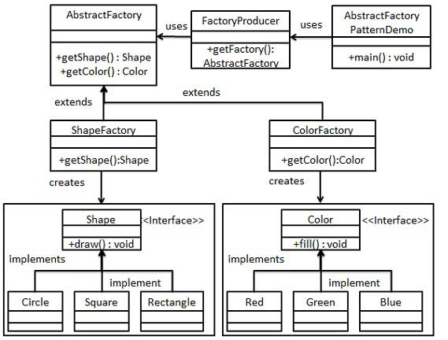

抽象工厂模式（Abstract Factory Pattern）是围绕一个超级工厂创建其他工厂。该超级工厂又称为其他工厂的工厂。这种类型的设计模式属于创建型模式，它提供了一种创建对象的最佳方式。
在抽象工厂模式中，接口是负责创建一个相关对象的工厂，不需要显式指定它们的类。每个生成的工厂都能按照工厂模式提供对象。
介绍
意图：提供一个创建一系列相关或相互依赖对象的接口，而无需指定它们具体的类。
主要解决：主要解决接口选择的问题。
何时使用：系统的产品有多于一个的产品族，而系统只消费其中某一族的产品。
如何解决：在一个产品族里面，定义多个产品。
关键代码：在一个工厂里聚合多个同类产品。
应用实例：工作了，为了参加一些聚会，肯定有两套或多套衣服吧，比如说有商务装（成套，一系列具体产品）、时尚装（成套，一系列具体产品），甚至对于一个家庭来说，可能有商务女装、商务男装、时尚女装、时尚男装，这些也都是成套的，即一系列具体产品。假设一种情况（现实中是不存在的，要不然，没法进入共产主义了，但有利于说明抽象工厂模式），在您的家中，某一个衣柜（具体工厂）只能存放某一种这样的衣服（成套，一系列具体产品），每次拿这种成套的衣服时也自然要从这个衣柜中取出了。用 OOP 的思想去理解，所有的衣柜（具体工厂）都是衣柜类的（抽象工厂）某一个，而每一件成套的衣服又包括具体的上衣（某一具体产品），裤子（某一具体产品），这些具体的上衣其实也都是上衣（抽象产品），具体的裤子也都是裤子（另一个抽象产品）。
优点：当一个产品族中的多个对象被设计成一起工作时，它能保证客户端始终只使用同一个产品族中的对象。
缺点：产品族扩展非常困难，要增加一个系列的某一产品，既要在抽象的 Creator 里加代码，又要在具体的里面加代码。
使用场景： 1、QQ 换皮肤，一整套一起换。 2、生成不同操作系统的程序。
注意事项：产品族难扩展，产品等级易扩展。
实现
我们将创建 Shape 和 Color 接口和实现这些接口的实体类。下一步是创建抽象工厂类 AbstractFactory。接着定义工厂类 ShapeFactory 和 ColorFactory，这两个工厂类都是扩展了 AbstractFactory。然后创建一个工厂创造器/生成器类 FactoryProducer。
AbstractFactoryPatternDemo，我们的演示类使用 FactoryProducer 来获取 AbstractFactory 对象。它将向 AbstractFactory 传递形状信息 Shape（CIRCLE / RECTANGLE / SQUARE），以便获取它所需对象的类型。同时它还向 AbstractFactory 传递颜色信息 Color（RED / GREEN / BLUE），以便获取它所需对象的类型。

为形状创建一个接口
Shape.javapublic interface Shape { void draw(); }创建实现接口的实体类
Rectangle.javapublic class Rectangle implements Shape { @Override public void draw() { System.out.println("Inside Rectangle::draw() method."); } }Square.java
public class Square implements Shape { @Override public void draw() { System.out.println("Inside Square::draw() method."); } }Circle.java
public class Circle implements Shape { @Override public void draw() { System.out.println("Inside Circle::draw() method."); } }为颜色创建一个接口
Color.java
public interface Color {
void fill();
}
- 创建实现接口的实体类
Red.java
public class Red implements Color {
@Override
public void fill() {
System.out.println("Inside Red::fill() method.");
}
}
Green.java
public class Green implements Color {
@Override
public void fill() {
System.out.println("Inside Green::fill() method.");
}
}
Blue.java
public class Blue implements Color {
@Override
public void fill() {
System.out.println("Inside Blue::fill() method.");
}
}
- 为 Color 和 Shape 对象创建抽象类来获取工厂
AbstractFactory.java
public abstract class AbstractFactory {
public abstract Color getColor(String color);
public abstract Shape getShape(String shape) ;
}
- 创建扩展了 AbstractFactory 的工厂类，基于给定的信息生成实体类的对象
ShapeFactory.java
public class ShapeFactory extends AbstractFactory {
@Override
public Shape getShape(String shapeType){
if(shapeType == null){
return null;
}
if(shapeType.equalsIgnoreCase("CIRCLE")){
return new Circle();
} else if(shapeType.equalsIgnoreCase("RECTANGLE")){
return new Rectangle();
} else if(shapeType.equalsIgnoreCase("SQUARE")){
return new Square();
}
return null;
}
@Override
public Color getColor(String color) {
return null;
}
}
ColorFactory.java
public class ColorFactory extends AbstractFactory {
@Override
public Shape getShape(String shapeType){
return null;
}
@Override
public Color getColor(String color) {
if(color == null){
return null;
}
if(color.equalsIgnoreCase("RED")){
return new Red();
} else if(color.equalsIgnoreCase("GREEN")){
return new Green();
} else if(color.equalsIgnoreCase("BLUE")){
return new Blue();
}
return null;
}
}
- 创建一个工厂创造器/生成器类，通过传递形状或颜色信息来获取工厂。
FactoryProducer.java
public class FactoryProducer {
public static AbstractFactory getFactory(String choice){
if(choice.equalsIgnoreCase("SHAPE")){
return new ShapeFactory();
} else if(choice.equalsIgnoreCase("COLOR")){
return new ColorFactory();
}
return null;
}
}
- 使用 FactoryProducer 来获取 AbstractFactory，通过传递类型信息来获取实体类的对象
AbstractFactoryPatternDemo.java
public class AbstractFactoryPatternDemo {
public static void main(String[] args) {
//获取形状工厂
AbstractFactory shapeFactory = FactoryProducer.getFactory("SHAPE");
//获取形状为 Circle 的对象
Shape shape1 = shapeFactory.getShape("CIRCLE");
//调用 Circle 的 draw 方法
shape1.draw();
//获取形状为 Rectangle 的对象
Shape shape2 = shapeFactory.getShape("RECTANGLE");
//调用 Rectangle 的 draw 方法
shape2.draw();
//获取形状为 Square 的对象
Shape shape3 = shapeFactory.getShape("SQUARE");
//调用 Square 的 draw 方法
shape3.draw();
//获取颜色工厂
AbstractFactory colorFactory = FactoryProducer.getFactory("COLOR");
//获取颜色为 Red 的对象
Color color1 = colorFactory.getColor("RED");
//调用 Red 的 fill 方法
color1.fill();
//获取颜色为 Green 的对象
Color color2 = colorFactory.getColor("Green");
//调用 Green 的 fill 方法
color2.fill();
//获取颜色为 Blue 的对象
Color color3 = colorFactory.getColor("BLUE");
//调用 Blue 的 fill 方法
color3.fill();
}
}
- 执行程序，输出结果
Inside Circle::draw() method.
Inside Rectangle::draw() method.
Inside Square::draw() method.
Inside Red::fill() method.
Inside Green::fill() method.
Inside Blue::fill() method.